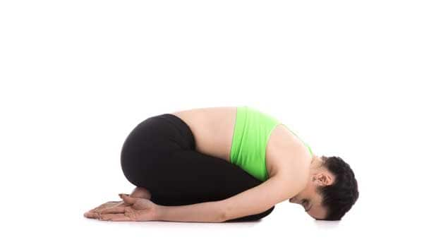

yogga poses

This restful posture helps let go and surrender. It restores vitality physically, mentally and emotionally. Insert the pose between challenging asanas, and practice with closed eyes, listening to the sound of your breath. Bend your knees and sit on your heels. Keep your hips on your heels. Lower your head on the mat and bring your hands forward by your side. Press your thighs against your chest and breathe lightly.
child-pose
NEXT